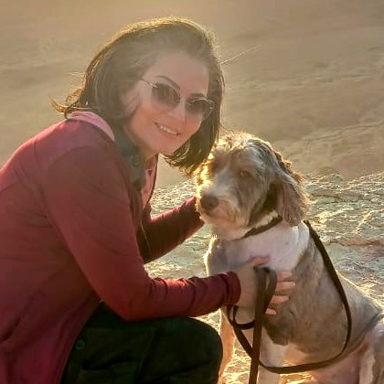

Barea M. Sinno
Political Methodologist · AI Measurement Science
Independent Researcher, AI Evaluation Infrastructure · Austin, TX
I study measurement: whether the instruments social science increasingly relies on — large language models used to score political text — actually measure what they claim to, with what reliability, and under what conditions their scores can legitimately be compared across time and settings.
My dissertation, Measuring Political Concepts Over Time with Constrained Large Language Models, develops the Measurement, Evaluation and Validation (MEV) framework, which treats constrained LLM evaluators as scientific instruments whose validity, reliability, and comparability must be demonstrated rather than assumed. It measures partisan affect and national economic ideology in ANES survey text from 1984 to 2020 — text spanning decades over which the meaning of the concepts themselves drifts — and introduces a drift taxonomy that distinguishes change in a concept from change in the instrument.
That dissertation opened a continuing program — Measurement Science for AI Evaluation — which pushes the instrument further and studies it as an object in its own right: whether a validated judge survives being copied into open-weight models, and whether agreement with a validated teacher is evidence of validity at all. Every study is registered before it is run and adjudicated under rules fixed in advance.
I received my Ph.D. in Political Science (Political Methodology) from Rutgers University in May 2026, advised by Beth Leech, and spent 2019–2024 as a visiting scholar in Linguistics at UT Austin with Junyi Jessy Li. More on the research →
Fields & Methods
News
- May 2026 Ph.D. in Political Science (Political Methodology) conferred by Rutgers University on May 17, 2026. Committee: Beth Leech (chair), Junyi Jessy Li, Richard Lau, and Jan Kubik.
- May 2026 Began an independent research program on AI evaluation infrastructure — validating closed models at the boundary and certifying open models from inside the stack.
- Spring 2026 Taught Research Methods as Instructor at Université Saint-Joseph, Beirut.
- May 2025 Concluded a Gemini safety evaluation and red-teaming engagement at Google (Oct 2024 – May 2025).
- 2023 Served as a peer reviewer for Public Opinion Quarterly, and our paper "How people talk about each other" appeared at EACL 2023.
- Jul 2022 "Political Ideology and Polarization of Policy Positions" appeared at NAACL 2022, releasing the first diachronic ideology-annotated news corpus.
Selected Publications
Conference of the European Chapter of the Association for Computational Linguistics (EACL), 2023 Dataset
Conference of the North American Chapter of the Association for Computational Linguistics (NAACL), 2022 First author Dataset
Conference on Empirical Methods in Natural Language Processing (EMNLP), 2019 Dataset
Four single-authored manuscripts from the dissertation are in preparation — see Publications.
Education
Committee: Beth Leech (chair) · Junyi Jessy Li (Linguistics, UT Austin) · Richard Lau (political psychology) · Jan Kubik (interpretive methods)
Misc
🗣️ I work in Arabic, French, and English, and read basic Spanish. Citizen of Canada and Lebanon.
🕊️ Trained mediator and dialogue facilitator — court mediation in Westchester and Queens, group moderation for the U.S. Institute of Peace, and East–West dialogue facilitation for Soliya. It is, in a roundabout way, the same question as my research: what happens to people's language when they disagree.